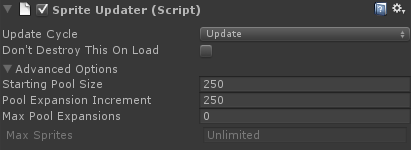

SpriteUpdater
A SpriteUpdater drives the main animation update in Sprites assigned to it.
Sprites must be updated each frame in order for animation to take place. A Sprite can update itself in the Update cycle if Sprite.selfUpdate is set to True, but for more control over the update cycle, you can use a SpriteUpdater. A SpriteUpdater, when added to a scene, drives the update cycle on Sprites assigned to it.
Creating a SpriteUpdater
Drag the SpriteUpdater prefab into the scene. The prefab can be found in the "/SpriteFactory/Prefabs/" folder. Or you can just create a blank GameObject and add a SpriteUpdater component to it.
Adding Sprites to a SpriteUpdater
You must assign the SpriteUpdater to the Sprite.spriteUpdater variable in the inspector for the SpriteUpdater to handle updates when gameplay begins. However, if you are assigning the sprite to a SpriteUpdater via scripting during gameplay, it is recommended you instead assign it by calling SetSpriteUpdater in the Sprite or by calling SpriteUpdater.AddSprite or SpriteUpdater.AddAllSprites in the SpriteUpdater. (The reason for this is that the SpriteUpdater assignment may take place 1 frame after assignment during gameplay by using the spriteUpdater variable, but it happens instantly when set via the aforementioned functions.)
Update Cycle
A SpriteUpdater allows you to customize when the Sprites assigned to it will be updated. You can choose from any of the standard update cycles: Update, FixedUpdate, or LateUpdate. You can also choose Manual if you prefer to drive the update yourself using SpriteUpdater.UpdateSprites.
Inspector

| Update Cycle | Sprites controlled by this SpriteUpdater will be updated on the specified update cycle. | |
| Don't Destroy This On Load | True = Prevent this SpriteUpdater from being destroyed on level load. | |
| Advanced Options | ||
| Starting Pool Size | The number of Sprites to track before expanding the pool size. | |
| Pool Expansion Increment | The number of entries added to the pool each time it is expanded. | |
| Max Pool Expansions | The maximum number of times the pool can be expanded. 0 = Infinite. | |
| Max Sprites | The total number of sprites that can be managed. Calculated from the above variables. |